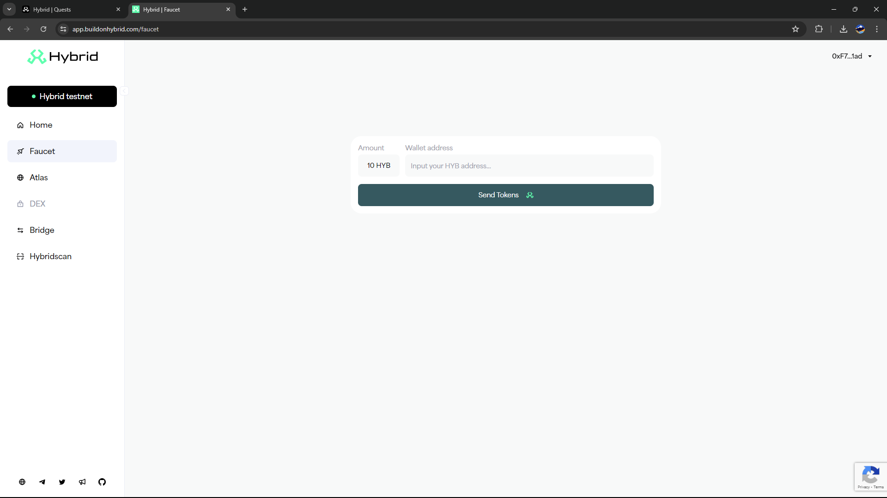
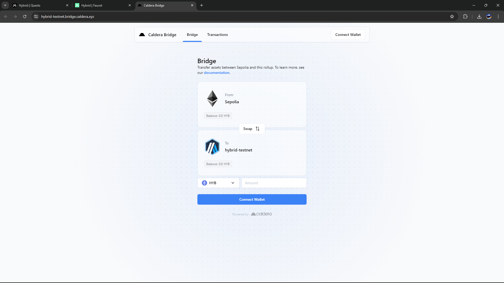
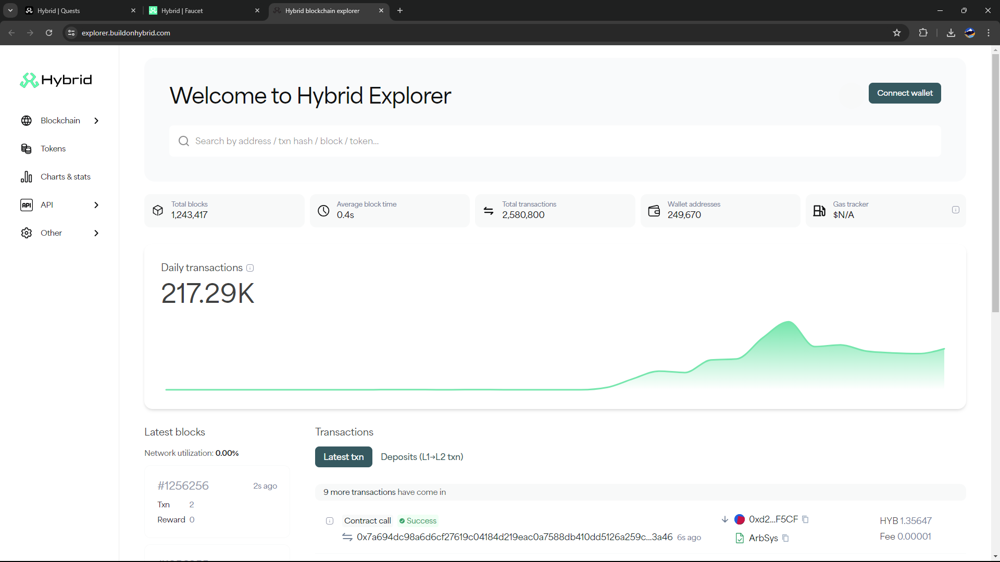
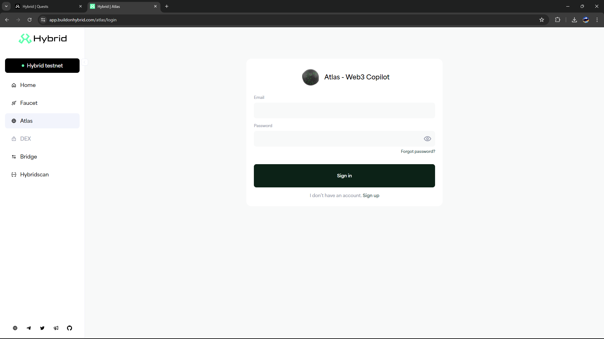

Embark on the Hybrid Testnet Adventure: A Comprehensive Guide
Explore Innovative Features and Experience the Best of Blockchain
Reading Time
8 Mins
View
1500 Views
Publish Date
07/03/2024
Drip the Faucet
The first feature worth highlighting is Drip the Faucet. This feature allows users to receive free tokens that can be used on the testnet. The process is very easy and quick; with just a few clicks, you can get tokens to start transacting.
Steps to Use Drip the Faucet:
- Open the Hybrid Testnet application at this link.
- Navigate to the Drip the Faucet section.
- Click the "Drip" button to receive free tokens.
Bridge Tokens
Bridge Tokens is a feature that allows users to move tokens from one network to another easily and securely. This feature is very useful for those who frequently transact across networks.
How to Use Bridge Tokens:
- Log in to the Hybrid Testnet application.
- Select the "Bridge Tokens" menu.
- Choose the source and destination networks.
- Enter the number of tokens to be transferred and confirm the transaction.
Make Transactions
Transactions on Hybrid Testnet are very fast and efficient. Users can easily send and receive tokens without worrying about long wait times or high transaction fees.
Transaction Guide:
- Open the Hybrid Testnet application.
- Go to the "Transactions" section.
- Enter the recipient's address and the number of tokens to be sent.
- Confirm the transaction and wait for it to complete.
Interacting with Atlas, Hybrid's AI Agent
Atlas is an AI agent designed to assist users in various activities on Hybrid Testnet. Atlas can provide real-time information, assist with transactions, and even offer investment advice.
How to Interact with Atlas:
- Open the Hybrid Testnet application.
- Click the Atlas icon in the lower right corner of the screen.
- Ask questions or request assistance regarding Hybrid Testnet features.
Conclusion
Hybrid Testnet offers various features that are not only innovative but also very useful for its users. By using Drip the Faucet, Bridge Tokens, Make Transactions, and interacting with Atlas, you can maximize your experience in the blockchain world.
#HybridAirdrop and #HybridTestnetHybrid Testnet and start your adventure now!